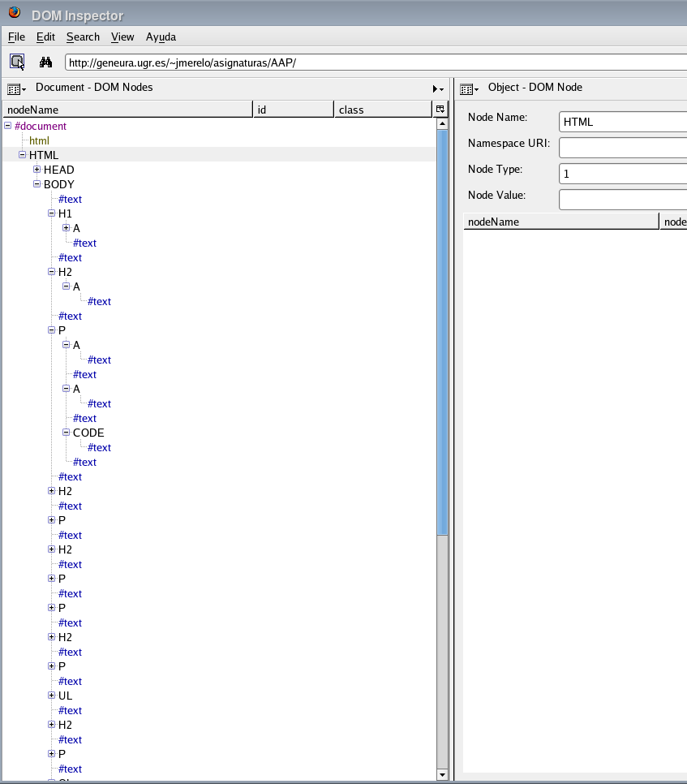
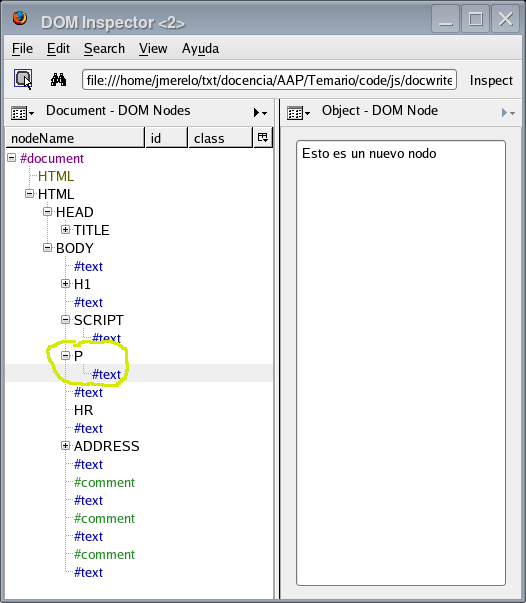

Nadie en su sano juicio usaría el Javascript en un curso de arquitecturas de altas prestaciones. Javascript es un lenguaje interpretado, que se ejecuta principalmente en el navegador, y fuera de él casi no se usa. No está diseñado para realizar cálculo intensivo, como el Fortran (nadie en su sano juicio enseñaría hoy Fortran, de todas maneras), ni hay ningún tipo de sistema operativo o procesador o lo que sea optimizado para trabajar con Javascript. Pero la cuestión es que los navegadores, que son los nuevos sistemas operativos, sí que lo están. Y por eso es importante aprender a trabajar con él.
Por eso, frente a otros lenguajes, Javascript tiene una ventaja. Está en todas partes. No hay ordenador sin navegador, ni hay navegador sin Javascript (salvo en móviles y algunos PDAs). Se puede ejecutar hasta en el navegador Opera que viene con la Wii. Y no cabe duda que una de las ventajas que ofrece la computación de altas prestaciones en su vertiente distribuida es el poder abarcar cuantos más dispositivos mejor. Por eso Javascript es la elección adecuada.
El que esté en tantos dispositivos se debe en parte a que ha sido definido como un estándar ECMA. Esto da lugar a muchas implementaciones diferentes, que son, además, independientes del fabricante. Y, por otro lado, todas las implementaciones suelen usar un conjunto de objetos estándar (que no son estrictamente parte de un lenguaje) que se pueden usar para añadir funcionalidad a una aplicación. Muchas aplicaciones complejas, como GMail o Google docs dependen de estos objetos para crear aplicaciones en la web que se comporten como si se ejecutaran en un sistema operativo nativo.
Además, a diferencia de otros lenguajes, es muy fácil crear una aplicación distribuida con Javascript (ojo, no digo en Javascript, porque hará falta algún otro lenguaje de programación en la parte del servidor). Tanto por su integración con el navegador (parte inseparable de la web, una arquitectura cliente-servidor) como por los objetos que suele tener el mismo, crear una aplicación cliente-servidor es casi trivial y ha dado lugar a un estilo de programación denominado AJAX.
aptitude search javascript y salen esos y alguno más. Fedora
Core es un poco más rácano en cuanto a entornos: aunque los
puedes instalar bajándote los fuentes y compilando, el que está
disponible en los repositorios es uno llamado sólo js,
aparentemente el SpiderMonkey. Para instalarlo,
escribir yum install js. Para los ejemplos que vienen en este tema,
sustituir #!/usr/bin/smjs por #!/usr/bin/js . En cuanto a
Windows, las últimas versiones permiten ejecutar un dialecto de
JS simplemente ejecutando, desde la línea de órdenes, cscript
loquesea.js. Puede, sin embargo, que todas las funciones no
estén disponibles, por lo que aconsejamos que se use Linux (en
general, pero también para esta asignatura). Para ejecutar Javascript no hace falta más que un navegador, pero también hay entornos para trabajar con él de forma autónoma, tal como el Mozilla SpiderMonkey, que últimamente ha sido sustituida por Tamarin y el Rhino, éste último basado en Java. Conviene instalar alguno de ellos para poder ejecutar los programas de ejemplo; por ejemplo, para instalar el primero habrá que ejecutar (desde la consola de administrador o superusuario):
En cuanto a los navegadores, puede que haga falta activar Javascript para que lo entiendan. Por ejemplo, en Firefox hay que activarlo usando Edit -> Preferencias -> Contenido -> Activar Javascript.
xemacs va de lujo. En realidad, esa integración con el navegador puede que haya estorbado a la aceptación de JS como un lenguaje decente; tampoco ha ayudado que la mayoría de las librerías que se hayan desarrollado estén relacionadas precisamente con la Web, y no tenga una librería madura para, pongamos por caso, acceder a bases de datos (aunque, poco a poco, también las va habiendo). Pero también ha permitido que el lenguaje siga siendo pequeño, y se haya desarrollado principalmente a base de añadir objetos y clases externas al mismo. En resumen, que en el marco de eso que se ha venido en llamar web 2.0 JS se ha convertido en adulto (y mucho más desde que ha sido usado para crear un emulador del ordenador clásico Commodore 64), y merece la pena estudiarlo como cualquier otro lenguaje, o incluso más, ya que la mayoría de las aplicaciones basadas en web (o todas) lo usan.
Javascript se puede desarrollar en cualquiera de los entornos habituales, tales como Eclipse y NetBeans, pero también hay IDE específicos, Aptana Studio y 1st Javascript Editor, que es de pago, pero pueden conseguirse versiones de evaluación gratuitas.
Algunas respuestas de alumnos de años anteriores: de Víctor y Jose.
#!/usr/bin/smjs
print( 'Hola, Mundo' );
En realidad, el JS es bastante parecido al C, y, para el caso,
también al Java. Este programa producirá:
jmerelo@vega:~/txt/docencia/AAP/Temario$ code/js/hola.js
Hola, Mundo
Todas las opciones del shell javascript están
en este
manual en Mozilla.
print por WScript.echo. También
puedes
bajarte un
binario de SpiderMonkey, o compilarlo por tu cuenta.Para ejecutarlo desde el navegador habrá que hacer una poca más de historia, pero tampoco tanto. Para empezar, si el código no es muy extenso se puede hacer directamente desde la consola de Javascript, que se obtiene de diferentes formas: en Chrome, por ejemplo, se pulsa sobre el icono de la página, y "Opciones para desarrolladores" seguido de "consola Javascript". Lo vemos en este ejemplo (darle a ver fuente para ver el código) donde se incluye el programa en JS de esta forma:
<script type='text/javascript' src='hola.js'></script>
El problema es que, en este caso, la orden print se
interpreta como impresión por impresora, y habrá que cambiarla
por otra que signifique lo mismo, escribir en el dispositivo de
salida que se esté usando:
document.writeln('Hola, Mundo')
Lo que también se puede escribir directamente así:
<script
type='text/javascript'>document.writeln('Hola, Mundo')</script>
Vistas ya las mil y una formas de escribir cosas en la pantalla, procedamos a temas más escabrosos, como lo que viene siendo hacer algo realmente. Por ejemplo, un bucle que cree una tabla HTML, como se hace en el siguiente programilla:
var tabla="table";
var celda="td";
var fila="tr";
var matriz = [1,2,3];
print( "<"+tabla+">");
for (i in matriz ) {
print( "<"+fila+">");
for ( j in matriz ) {
print ("<"+celda+">"+matriz[i]*matriz[j]+"</"+celda+">");
}
print ("</"+fila+">\n");
}
print ("</"+tabla+">");
Este programa tiene dos bucles anidados, que imprimen un producto dentro de una tabla. La salida será tal que así (ver el fuente para la estructura):
| 1 | 2 | 3 |
| 2 | 4 | 6 |
| 3 | 6 | 9 |
El programa es más complicado de lo que parece. Para declarar
variables en JS se usa el genérico var, aunque
también se pueden declarar tipos específicos. Para no pillarnos
los dedos, usamos var. En realidad, tampoco hace falta:
simplemente usando una variable aparece mágicamente. Con las
matrices ocurre igual (es decir, se declaran y se les asigna
valor directamente) : matriz lo es, y simplemente
se declaran sus valores entre corchetes.
Los bucles tienen la apariencia habitual, y se pueden usar igual
que en C (es decir, con el clásico for i=0, i <...), pero
haremos un bucle que recorra la matriz, usando un
iterador i, que en este caso se comporta como una variable
de bucle de las de toda la vida. Usamos el + para
concatenación de cadenas, y poco más. El resto es como el C, o
el Java. De hecho, se pueden usar los bucles clásicos con
comparación e incremento, como se muestra en tabla1.js:
for (i=1; i<=3; i++ ) {
print( "<"+fila+">");
for ( j=1; j<=3; j++ ) {
print ("<"+celda+">"+i*j+"</"+celda+">");
}
print ("</"+fila+">\n");
}
Aunque queda un poco torpe tanto <>... vamos a reducir un poco el programa, haciéndolo más elegante (aunque más largo: no se puede tener todo):
var matriz = [1,2,3];
print( marca('table'));
for (i in matriz ) {
print( marca( 'tr' ));
for ( j in matriz ) {
print ( celda(matriz[i]*matriz[j]));
}
print ( finmarca('tr'));
}
print (finmarca('table'));
function marca( m ) {
return "<"+m+">";
}
function finmarca( m ) {
return "</"+m+">";
}
function celda( contenido ) {
return marca("td")+contenido+finmarca("td");
}
La principal diferencia con respecto al anterior es el uso de
funciones. Las funciones en JS tienen una estructura bastante
clásica: function nombre-de-función (param1, param2...). Una
vez más, se nota que JS no es un lenguaje con tipos fuertes,
pudiendo pasar los parámetros sin tipo, y adaptándose dentro de
la función al tipo necesario. Y estos parámetros se pasan por valor, es decir,
que las modificaciones al parámetro formal no se trasladan a la
variable que se use. Además, se pueden declarar donde a
uno le dé la gana. Para llamarlas tampoco hay que hacer nada
especial, se usa el clásico paréntesis. La salida es exactamente
la misma que antes. El también clásico return devuelve un valor.
El ámbito de las variables es el bloque donde aparecen o se declaran, pero hay que tener en cuenta que, a efectos de JS, una página web es un programa. Se pueden declarar variables en la cabecera del documento HTML, y estarán accesibles en cualquier otro sitio, siempre que esté mas adelante en el documento (porque los programas javascript se ejecutan en el mismo orden en el que se carga el documento). También habrá que tener en cuenta, en caso de que esté incluido en una página web, que aunque la declaración de una subrutina afecte a todo el programa, puede que esa parte de la página no se haya cargado todavía, con lo que no estará disponible. Una vez más, la programación distribuida no es totalmente igual a la programación en otros lenguajes.
Javascript es un lenguaje basado en objetos, aunque un tanto peculiar; en realidad, de casi todas las características de un lenguaje orientado a objetos, solo tiene los objetos, e incluso estos son de aquella manera. Por eso no es exactamente dirigido a objetos u orientado a objetos. Las características las veremos en el siguiente programa, que podría servir para hacer quinielas.
var equipos= new Array('Madrid', 'Barça', 'Atleti', 'Geta', 'Betis', 'Depor', 'Sevilla', 'Graná');
// Definición de la clase Partido
function Partido(local,visitante) {
this.local = local;
this.visitante=visitante;
this.resultado=null;
}
var midsize = equipos.length/2;
var quiniela = new Array( midsize );
for ( i=0; i < midsize ; i++ ) {
var equipo1 = equipos.splice(Math.floor( equipos.length*Math.random()) , 1);
var equipo2 = equipos.splice(Math.floor( equipos.length*Math.random()), 1);
quiniela[i] = new Partido( equipo1, equipo2 );
}
for ( i in quiniela ) {
print( "Partido " + (parseInt(i)+1)+": " + quiniela[i].local + " - " + quiniela[i].visitante);
}
Con lo primero que nos enfrentamos es con una nueva forma de
definir una matriz o Array: ya que sabemos que JS es OO, pues
usamos una forma OO de definirlo, mediante la orden new, que,
como en Java y en C++, crea un nuevo objeto llamando al
constructor del mismo. En este caso le pasamos directamente
los elementos que constituyen el vector o array, pero
podríamos haberle pasado el tamaño de esta forma:
var myArray = new Array(33);
Los objetos así creados son objetos de pleno derecho, y se puede
acceder a sus propiedades y métodos usando también una
sintaxis clásica: el puntito . tras el nombre de la
variable. Por ejemplo, myArray.length devolvería el tamaño de
la matriz
Pero como lo que se trata en este programa es de definir nosotros
una clase, lo hacemos en las líneas siguientes, en la función
Partido, que convencionalmente ponemos en mayúscula, para
indicar que es un nombre de clase. En realidad, una clase en
JS es una función dentro de la cual se le asigna un valor a la
variable this, como en esta: cada uno de los elementos de la
variable this será una variable de instancia. Como se ve, aquí
no hay encapsulación ni perrito que le ladre.
Lo que vamos a crear es un vector de estos partidos, e irle
asignando valores extraidos aleatoriamente. Mientras tanto,
usamos los métodos que llevan objetos de clases estándar JS;
igual que otros lenguajes tienen librería estándar, JS tiene
clases estándar: Array, que ya hemos visto, y Math. Lo que
usamos de Math son métodos de clase, no de instancia, tales
como Math.random, que genera un número aleatorio entre 0 y
1. También se usa un método de instancia, splice, que extrae
una parte del vector de equipos; extraemos el seleccionado, para
que no dé por saco mientras generamos el resto de la guiniela.
Y el objeto lo creamos mediante una clásica llamada:
quiniela[i] = new Partido( equipo1, equipo2 );
Más adelante usamos un bucle in para escribir los valores de cada
uno de los partidos; las variables no están encapsuladas, así
que se puede acceder a ellas directamente: partido.local, por
ejemplo. Hay también un pequeño truco: el uso de parseInt
dentro de print para que se interprete i como un número
entero, no como una cadena, y, por tanto, el + que lo sigue
como una suma normal y no una concatenación de cadenas. i+1
daría 11, mientras que parseInt(i)+1 dará 2.
Y el resultado, aleatorio por supuesto, será algo así
como esto :
Partido 0: Graná - Atleti
Partido 1: Madrid - Depor
Partido 2: Betis - Barça
Partido 3: Sevilla - Geta
La declaración de métodos de clase se hace más o menos de la misma forma, que no es muy ortodoxa, pero es la que hay. Lo veremos en el siguiente programa, del que sacamos el fragmento más interesante:
// Definición de la clase Partido
function Partido(local,visitante) {
this.local = local;
this.visitante=visitante;
this.resultado=null; //Estas son variables
this.setResultado = setResultado;
this.toString = toString; // y estos son métodos de clase
}
function setResultado( esteResultado ) {
if ( esteResultado == '1' || esteResultado=='x' || esteResultado=='2' ) // sólo valores válidos
this.resultado = esteResultado;
}
function toString() {
return "Partido " + i + ": " + quiniela[i].local + " - " + quiniela[i].visitante + " = "+ this.resultado;
}
Añadimos un par de funciones, y para que pertenezcan a la clase,
hala, con un this por aquí y un this por allá,
solucionado. Es de buen gusto llamar al método con el mismo
nombre que la función, para no despistarse; también seguir una
cierta convención para ponerles nombres: get, o to, o cosas
por el estilo. Lo que no es de recibo es llamar a una función
que cambia el valor de la variable igual que la variable, porque
entonces nos liamos. Y como ya hemos visto antes como se llama a
los métodos de instancia, pues listos. No se hable más.
Pero hay más matrices, aparte de las lineales: JS, como muchos otros lenguajes, permite trabajar con matrices asociativas (también llamadas diccionarios o hashes). En una matriz asociativa, la clave es una cadena, en vez de un número, lo que le da mucha más flexibilidad a la hora de almacenar información. En un vector, se accede a cada uno de los elementos del vector a través de un índice numérico, y eso implica también un orden en su estructura (y, a veces, una continuidad en su almacenamiento, aunque no necesariamente tiene que ser así). Es decir, un vector lineal es un grupo de parejas (0, valor[0], 1, valor[1],...., n, valor[n]). De hecho, como los números suelen ser sucesivos, muchas veces se dan por sobreentendidos, de forma que para trabajar con un vector (asignarle valores, por ejemplo) sólo se usan sus valores: valor[0], valor[1],..., valor[n].
Sin embargo, una matriz asociativa, diccionario o Tabla_hash
(o simplemente hash) está compuesta por una serie de pares
(cadena alfanumérica, valor): (cadena1, valor1,
cadena2,valor2... cadenan,
valorn). Los valores están asociados a su cadena
correspondiente; de forma que la forma de acceder a los valores
es a través de la cadena alfanumérica usada para indexarlos, que
se suele denominar clave (key). Casi todos los lenguajes
de programación tienen alguna forma de usar estas matrices
asociativas. Por ejemplo, en Perl:
my %matrizAsociativa; # % para matrices asociativas
$matrizAsociativa{'variable'}='Valor'; # { para las claves
print $matrizAsociativa{'variable'};
devolvería Valor.
En Ruby funciona de forma similar: usando corchetes para acceder al valor, y usando => para asignarlo:
matriz_asociativa = { 'esta_clave' => 'este_valor'}
puts matriz_asociativa['esta_clave']
Las usaremos en el siguiente programa, que genera aleatoriamente 10 jornadas de una liga, y asigna puntuación según los resultados:
load('Partido.js');
var equipos= new Array('Madrid', 'Barça', 'Atleti', 'Geta', 'Betis', 'Depor', 'Sevilla', 'Graná');
function jornada( estosEquipos ) {
var equiposAqui = new Array;
equiposAqui = equiposAqui.concat(estosEquipos);
var midsize = equiposAqui.length/2;
var quiniela = new Array( midsize );
var unox2 = new Array( '1','x','2');
for ( var i=0; i < midsize ; i++ ) {
var equipo1 = equiposAqui.splice(Math.floor( equiposAqui.length*Math.random()) , 1);
var equipo2 = equiposAqui.splice(Math.floor( equiposAqui.length*Math.random()), 1);
quiniela[i] = new Partido( equipo1, equipo2 );
quiniela[i].setResultado( unox2[Math.floor( 3*Math.random()) ]);
}
return quiniela;
}
var quinielas = new Array;
for ( var i = 0; i < 10; i ++ ) {
quinielas[i] = jornada( equipos );
}
var resultados= new Array;
for ( var i in equipos ) {
resultados[equipos[i]]=0;
}
for ( var i = 0; i < quinielas.length; i ++ ) {
for ( var j = 0;j < quinielas[i].length; j ++ ) {
var local = quinielas[i][j].local;
var visitante = quinielas[i][j].visitante;
var resultado = quinielas[i][j].resultado;
if ( resultado == 1 ) {
resultados[local]+=3;
} else if ( resultado == 'x' ) {
resultados[local]+=1;
resultados[visitante]+=1;
} else { // resultado == 2
resultados[visitante]+=3
}
}
}
for ( var i in resultados ) {
print( i + ": " + resultados[i])
}
En parte, este programa es similar a los anteriores: la parte que
generaba cada jornada está ahora en una función, que devuelve un
array de resultados, que se guardan en el array
quinielas. Hemos sacado, además, la definición de la clase
Partido a un fichero externo, que cargamos con load. Por
otro lado, como a la función jornada se le pasa una referencia
al vector con los equipos, tenemos que copiarlo a una variable
local, definiéndola (equiposAqui), y concatenándole (concat)
el vector que se le pasa por valor, que es igual que copiarlo,
pero se hace en una sola orden.
El truco está a partir de la definición de la
variable resultados. Esta variable es una matriz asociativa
que contendrá la puntuación de los equipos, y estará indexada
por el nombre del equipo. Se declara igual que los demás arrays,
y, para inicializarlo, vamos extrayendo los valores del vector
de equipos, y usándolos como clave:
resultados[equipos[i]]=0;
equipos[i] valdrá sucesivamente Barça, Graná... y así se irán
inicializando a 0 los valores correspondientes. Si no se
inicializan, la primera vez que se usa una variable tiene el
valor NaN, con el que no se puede hacer nada. Es así de
arisco.
Más adelante se va recorriendo en un bucle doble los partidos de
cada una de las jornadas, y asignando puntuación dependiendo del
resultado de la quiniela. Se usa la construcción if... else if
... else, que funciona de la forma habitual, aunque también
podríamos haber usado switch, como en el siguiente programa, que en lo
único que cambia es en estas líneas:
switch (resultado) {
case '1':
resultados[local]+=3;
break;
case 'x':
resultados[local]+=1;
resultados[visitante]+=1;
break;
default:
resultados[visitante]+=3;
}
}
y que viene a ser como el anterior, pero con cases en vez de
ifs. Vamos, tres cuartos de lo mismo. Nótese el uso de
default para todos los valores no incluidos en los
anteriores; en este caso sería simplemente el '2'.
En realidad, todo en Javascript es un objeto, y especialmente los
vectores: tanto los vectores tradicionales como las matrices
asociativas como los objetos se representan internamente de la
misma forma, y te puedes referir a ellos de diferentes
maneras. Vamos a usar el depurador interactivo para verlo,
ejecutando simplemente rhino, smjs, js, d8 o kjs en la línea de
comandos (imagino que en Windows se ejecutará cscript, quizás
con alguna opción)
simplemente, o . Una vez hecho, tecleamos las siguientes órdenes:
js> foo = new Array
js> foo.cero='Cero'
Cero
js> foo[1] = 'Uno'
Uno
js> foo['dos'] = 'Dos'
Dos
js> foo.dos
Dos
js> foo['cero']
Cero
js> for ( i in foo) { print(foo[i]);}
Cero
Uno
Dos
Hay que teclear lo que se encuentra detrás de js>; cada segunda
línea es la respuesta del intérprete a nuestras órdenes. En la
primera, creamos un vector, y le asignamos valor a tres
elementos de formas diferentes: usando la notación de objeto
(con el .) para el 0, la notación de vector para el 1, y la
notación de matriz asociativa para el 2. Luego se ve que,
independientemente de cómo se haya asignado el valor, se puede
usar cualquier otra notación para acceder al elemento; y,
finalmente, vemos como se puede recorrer de forma uniforme el
array usando sus componentes mediante la orden in.
Por eso precisamente, hay que tener un poco de cuidado con estos
arrays asociativos que se comportan un poco como les da la
gana. Es conveniente usar para ellos Object, que es lo que
son, en vez de Array. De hecho, si en lo anterior sustituimos
Array por Object dará exactamente el mismo resultado. Por
eso se consideran perniciosas los arrays asociativos en JS, pero es simplemente una cuestión de convención.
No todo va a ser público en un objeto; también pueden tener su intimidad guardada en variables privadas:
js> function Foo( bar ) { this.bar = bar; var privada = 7;}
js> var este_foo = new Foo( 'correquetepillo' );
js> print(este_foo.bar)
correquetepillo
js> print(este_foo.privada)
undefined
Es tan secreta, de hecho, que ni siquiera te dice que no existe: simplemente que su valor está indefinido.
El propio estándard Javascript (ECMAScript) define una serie de
clases que se pueden instanciar, que corresponderían a la
librería estándar (o librería estándar de clases) en otros
lenguajes. Una de ellas ya la hemos visto: la clase
Array. Otra es la clase String, que se usa para manejar
cadenas alfanuméricas, chorros de 0s y 1s.
js> var cadena = new String("1");
js> print(cadena + 1)
11
La clase String tiene una serie de métodos que permiten hacer lo
habitual con las cadenas: encadenarlas, dividirlas, y buscar
cosas.
js> var nombres = "Pedro, Lucas, Juan".split(", ");
js> print(nombres[0])
Pedro
En este caso, split es un método de la clase String, y lo estamos
aplicando directamente sobre la cadena "Pedro, Lucas, Juan",
que, de por si, es un objeto de esa clase. split divide la
cadena usando los caracteres que le pasamos, y da lugar a un
Array con tantos componentes como resulte.
De camino, podría haber una clase para escribir y leer ficheros, porque con el rato que llevamos, todavía no hemos visto ninguna, y, además, cualquier lenguaje decente escribe y lee ficheros. Es más, es que muchos no hacen otra cosa, ¿no? Pues no. El estándar JS no define ningún tipo de rutina de E/S. Pero si usamos el intérprete Rhino (en vez de SpiderMonkey, que es el que hemos venido usando), podemos usar clases de Java directamente, lo que complica terriblemente el programa, pero ahí está, de todas formas:
// ejecutar con rhino lee_quiniela.js <argumento>
load('Partido.js');
var FileReader = java.io.FileReader;
var BufferedReader =java.io.BufferedReader;
var file_name = arguments[0];
var f = new FileReader(file_name);
var br = new BufferedReader( f );
var resultados= new Array;
var line = new String;
while ((line = br.readLine()) != null) {
var estaLinea = new String( line );
var resultado = estaLinea.split(" ");
switch (resultado[2]) {
case '1':
if ( resultados[resultado[0]] ) {
resultados[resultado[0]]+=3;
} else {
resultados[resultado[0]]=3;
}
break;
case 'x':
if ( resultados[resultado[0]] ) {
resultados[resultado[0]]+=1;
} else {
resultados[resultado[0]]=1;
}
if ( resultados[resultado[1]] ) {
resultados[resultado[1]]+=1;
} else {
resultados[resultado[1]]=1;
}
break;
default:
if ( resultados[resultado[1]] ) {
resultados[resultado[1]]+=3;
} else {
resultados[resultado[1]]=3;
}
break
}
}
for ( var i in resultados ) {
print( i + ": " + resultados[i])
}
El programa es bastante similar al anterior, pero lee de fichero en
vez de generar los resultados aleatoriamente. Y lo lee
aproximadamente de la misma forma a como se haría en Java. Por
eso hay que usar Rhino, que permite usar las clases de la
librería estándar de Java de forma nativa. En este caso
usamos dos clases: FileReader y BufferedReader, para poder
leer de línea en línea. La única diferencia a como se haría en
Java es que hay que pasar la línea leida de un objeto String
de Java a un objeto String de JS, que es lo que se hace en
var estaLinea = new String( line );. También sale un poco más
largo porque, como indicamos en el programa de más arriba, los
elementos de un Array hay que inicializarlos; en cada caso del
switch comprobamos si están inicializados o no antes de
sumarles; si no lo está, le asignamos el valor
directamente.
En realidad, las primeras líneas lo único que hacen es declarar un alias para las clases de Java. En JS una variable puede contener cualquier cosa, incluso una clase. Así acortamos el nombre, y parecen más de javascrí.
La otra diferencia es también cómo se ejecuta el fichero:
rhino lee_quiniela.js quiniela.datos
para ejecutarlo sobre el fichero
quiniela.datos, que dará el resultado siguiente:
Elche: 1
Atleti: 3
Cai: 1
Athleti: 6
Bar~a: 1
Madrid: 2
H~rcules: 1
Queda con esto más o menos claro que para ir donde nadie ha ido antes
con JS, hay que meterse un poco en Java. Pero no siempre.
Aunque no lo parezca, JS es todavía un lenguaje joven, al que le faltan gran cantidad de librerías básicas, y, especialmente, una forma centralizada de empaquetar, probar y distribuir esas librerías, como CPAN para Perl o GEMs para Ruby. Hay algo por el estilo, llamado OpenJSAN, de JS Archive Network. Para instalarlo hace falta Perl, y sólo hay unas pocas librerías todavía. Algunas muy útiles, pero siguen siendo unas pocas. Otras, como la amplia JSlib, sólo va en Windows.
La que si es popular es Prototype, una librería
que se usa principalmente en conjunción con RoR y AJAX, pero
resulta que necesita ejecutarse dentro del navegador, porque usa
objetos del mismo (como document, por ejemplo). Así que lo dejaremos para más adelante (si acaso).
Lo interesante de los objetos en JS es que hay una forma muy fácil
de serializarlos (es decir, convertirlos en texto u otro
formato de forma que se puedan intercambiar fácilmente con otros
programas a través de la red); a este formato se le denomina
JSON (JavaScript Object Notation, pronúnciese Jota-son o Yeison). Y como en realidad,
tal como se ha visto en el apartado anterior, todo es un objeto
en JS, se puede usar esta notación para asignar valores
prácticamente a cualquier cosa. Vamos a usar una vez más el
intérprete en modo interactivo para ver un ejemplo:
js> var objeto = { Madrid : 25, Atleti: 33, Ponferradina: 44 };
js> for (i in objeto) { print( i + " : "+ objeto[i] )};
Madrid : 25
Atleti : 33
Ponferradina : 44
Más fácil no puede ser. Se le asigna valor a un objeto con el formato
clave : valor (con coma al final), de la misma forma que se
haría a un array asociativo. Además, se pueden crear objetos
sobre la marcha y asignárselos a una variable cuyo valor se cree
también sobre la marcha:
js> eval("var objeto2 = { Madrid : 25, Atleti: 33, Ponferradina: 44 }");
js> for (i in objeto2) { print( i + " : "+ objeto[i] )};
Madrid : 25
Atleti : 33
Ponferradina : 44
donde usamos eval, que interpreta una expresión en Javascript como
si del propio intérprete se tratara. Las expresiones de
asignación de valores a objetos se pueden
anidar, para dar lugar a objetos más complejos
js> eval("var objeto2 = { Madrid : 25, Atleti: 33, Ponferradina: { casa: 33, fuera: 44} }");
js> for (i in objeto2) { print( i + " : "+ objeto2[i] )};
Madrid : 25
Atleti : 33
Ponferradina : [object Object]
Que parece más raro de la cuenta, pero que, con un poco de código, se
podría también imprimir.
Y JSON, precisamente, es uno de los formatos de intercambio, el más
simple, el que se usa en AJAX, y un modo de acceder también a
servicios web como geonames, del que hablamos en el primer
tema. Lo hacemos en el
siguiente ejemplo: json-geonames.html, del que extraemos
el código en JS (fichero geonames_call.js)
// this function will be called by our JSON callback
// the parameter jData will contain an array with geonames objects
function getLocation(jData) {
if (jData == null) {
// There was a problem parsing search results
return;
}
var html = '';
var geonames = jData.geonames;
for (i=0;i< geonames.length;i++) {
var name = geonames[i];
// we create a simple html list with the geonames objects
// the link will call the center() javascript method with lat/lng as parameter
html = name.name+ " Latitud: " + name.lat +', longitud: ' + name.lng;
}
document.getElementById('resultDiv').innerHTML = html;
}
// calls the geonames JSON webservice with the search term
function search() {
request = 'http://ws.geonames.org/searchJSON?country=ES&q=' + encodeURIComponent(document.getElementById('q').value) + '&maxRows=10&callback=getLocation';
// Create a new script object
// Implementación en jsr_class.js
aObj = new JSONscriptRequest(request);
// Build the script tag
aObj.buildScriptTag();
// Execute (add) the script tag
aObj.addScriptTag();
}
Este ejemplo es un poco complicado, sobre todo, por el mecanismo
que usa para hacer la llamada, y que está contenido en el
fichero jsr_class.js, que
contiene la clase JSONscriptRequest, que será la que
usemos para construirla llamada. La mecánica es la siguiente:
cada vez que se introduce un nombre de un pueblo o ciudad de
España, se genera un evento, y se llama a la función
search. Esta función hace construye una petición, dentro de la
cual está incluido callback=getLocation. El truco
es que esa petición genera un callback tal que cuando se
recibe la respuesta se llama a la función getLocation
(definida más arriba).
Esa función recibe como variable en jData el resultado que, al
estar en formato JSON, ya está, de hecho, en formato de un
objeto en JS. Por eso, en el bucle for recorremos
directamente el array geonames, que contiene objetos
cuyas variables de instancia son name, lat
y lng, que usamos para construir el código HTML que se
incluye en la página.
En particular, el ejemplo anterior es un ejemplo
de JSONP,
JSON with padding, que usa la capacidad que tienen los navegadores
de crear elementos sobre la marcha para crear un
elemento script y usarlo. Ese elemento script crea una
función, que nosotros llamamos desde fuera.
Continúa siendo difícil encontrar en libros y tutoriales un enfoque como el de este tema, centrado en JS como lenguaje y no como un chisme que se utiliza exclusivamente desde dentro del navegador. Eventualmente, habrá que tratar con esto, así que este momento es tan bueno como cualquier otro. En realidad, la mayor diferencia entre JS-sin-navegador y JS-con-navegador es el bagaje de objetos con el que tiene que trabajar y también el modelo que se va a usar para entrada y salida: la propia página en la que está inserto el programa.
En general, lo que hace un navegador es analizar el HTML que le envía el servidor y convertirlo en un árbol, el DOM o document object model. Todo lo que hay en el documento es una hoja o un nudo dentro de ese árbol (o parte de él, claro). Lo importante es que los programas JS, aparte de ser hojas dentro de ese árbol, también actúan sobre el mismo, añadiendo o quitando hojas o ramas enteras o simplemente alterando sus propiedades. El DOM está definido como un estándar del W3, pero eso no quita que haya problemas de compatibilidad entre los diferentes navegadores. Por ejemplo, Mozilla tiene su modelo de objetos, que usa en sus navegadores, los más bonitos del mundo mundial, pero en otros navegadores puede haber ligeras diferencias.
Para empezar, vamos a ver qué pinta tiene el DOM de un documento
cualquiera. Por ejemplo, usemos la página de la
asignatura. En Firefox, hay que instalar
el DOM
Inspector, un plugin, tras lo cual se ve el DOM completo con la
combinación de teclas Ctrl+Shift+I; para la versión 3 de
Firefox, es mejor que te instales Firebug. Para ésta página, saldría
algo así:

La estructura es la que cabe esperar: hay un nodo raíz, etiquetado
como document, del que descienden las dos partes del documento
HTML: HEAD y BODY. Y de ahí, el resto.
Todos las herramientas relacionadas con la página web, como las CSS,
trabajan y tienen en cuenta esta estructura DOM del documento. Y
cuando un programa JS se ejecuta dentro de un documento, puede
alterar su estructura. Veámoslo, por ejemplo, en el docwrite.html:
<!DOCTYPE HTML PUBLIC "-//W3C//DTD HTML 4.01 Transitional//EN">
<html>
<head>
<title>Prueba document.write</title>
</head>
<body>
<h1>Prueba document.write</h1>
<script type='application/javascript'>document.write('<p>Esto es un nuevo nodo</p>')</script>
<hr>
<address><a href="mailto:jmerelo@localhost.localdomain">Juan J. Merelo</a></address>
<!-- Created: Wed Feb 21 18:45:35 CET 2007 -->
<!-- hhmts start -->
Last modified: Wed Feb 21 18:46:41 CET 2007
<!-- hhmts end -->
</body>
</html>
que crearía un DOM con el aspecto que se ve en la imagen más cercana.

Como se ve, el nodo P sigue al nodo script, es decir, que el nodo
se crea en el DOM justamente siguiendo al nodo que incluye el
script. Un programa en javascript puede crear tantos nodos como a uno le
interese, pero de esta forma sólo se pueden colocar en el sitio
donde está el script. Así que habrá que imaginar otra forma de
hacerlo si queremos crear o alterar los nodos en cualquier otro
sitio (y se verá más adelante).
por otro lado, navegar por el modelo de objetos no es excesivamente complicado,
gracias a las funciones getElement(s)By*, que escogen elementos
del DOM de acuerdo con alguna
característica. getElementsByTagName escoge elementos por el
nombre de la etiqueta, mientras que getElementById usa el
atributo id; nótese la diferencia entre Elements y
Element; en el primer caso se devuelve un Array y en el
segundo uno solo, porque la Id es única. Cuando se trabaja con
un documento, habrá que
usar de forma sabia los atributos y clases de forma que sea
fácil escoger y trabajar con los elementos de un tipo
determinado, o con un elemento en concreto. Por ejemplo,
getElementByTagName('h2') devolverá un array con
todos los elementos que tengan esa etiqueta, y
getElementById('ej.t1.3') devolverá el tercer
bloque de ejercicios de este tema, como veremos en el ejemplo
siguiente (que está incluido en la misma página):
function putBloque(value) {
var ejs = document.getElementById('ej.T1.'+value);
document.getElementById('resultado1').innerHTML=ejs.textContent;
}
Un par de líneas sólo de JS: una para buscar el elemento (la
primera) y la segunda para extraer su contenido (textContent)
e introducirlo en otro, el elemento resultado1 que teníamos
preparado al efecto. innerHTML es el HTML interno de un
elemento: al asignarle un valor, efectivamente, sustituimos
parte del contenido de la página dinámicamente. ¿No es una
maravilla? Nótese, en todo caso, que para hacer este tipo de
navegación hay previamente que etiquetar los elementos con los
que se va a trabajar, y hacerlo de forma que cada id sea
único. En este caso se usa una convención: ej para
ejercicios, y T1 por el nombre del documento.
No se sabe porqué los temas de JS tienen tanta relación con los primates, pero el hecho es que GreaseMonkey es un plugin para los navegadores Mozilla que permite instalar en el navegador programillas JS específicos de una página o grupo de páginas. Para trabajar con él, lo primero que hay que hacer es instalarlo y reiniciar el navegador.
Una vez hecho eso, GreaseMonkey reconoce los scripts con la
extensión .user.js como propios, los instala, y
permite gestionarlos, activarlos, y desactivarlos, desde un
icono con un monito en la barra inferior del navegador. O sea,
que una vez que se vea el monito, podemos cargar este programa
(aap-nav.user.js) que lo usa:
// ==UserScript==
// @name AAP-Nav
// @namespace http://geneura.org/projects/greasemonkey
// @description Navegación por las secciones de AAP
// @include http://geneura.ugr.es/~jmerelo/asignaturas/*
// ==/UserScript==
GM_log('Entrando AAP-Nav');
var h2 = document.getElementsByTagName('h2');
var a_nodes = new Array;
var anchors = new Array;
for ( var secs = 0; secs < h2.length; secs ++ ) {
var thisA = h2[secs].getElementsByTagName('a');
a_nodes[secs] = thisA[0];
anchors[secs] = thisA[0].getAttribute('name');
GM_log('Anchor ' + secs + " " + anchors[secs]);
}
for ( var secs = 0; secs < h2.length; secs ++ ) {
var span = document.createElement('span');
span.setAttribute('style','background:lightblue');
if ( secs > 0 ) {
var ahref = document.createElement('a');
ahref.setAttribute('href','#'+anchors[secs-1]);
var txt=document.createTextNode('^');
ahref.appendChild(txt);
span.appendChild(ahref);
}
if ( secs < h2.length -1 ) {
span.appendChild(document.createTextNode(' | '));
var ahref = document.createElement('a');
ahref.setAttribute('href','#'+anchors[secs+1]);
var txt=document.createTextNode('v');
ahref.appendChild(txt);
span.appendChild(ahref);
}
a_nodes[secs].parentNode.insertBefore(span,a_nodes[secs]);
}
Lo primero que hay que hacer notar es que los scripts de
GreaseMonkey se ejecutan en un contexto diferente a los que están
alojados dentro de un documento web; el contexto se denomina
chrome, que es una referencia genérica a los interfaces de
usuario, pero en nuestro caso indica un contexto en el cual se
pueden ejecutar scripts con privilegios de los que carecen los que
se ejecutan dentro del documento.
En este caso no se usan tales privilegios: este programa añade unas flechitas de navegación a los apuntes de esta asignatura, de forma que se pueda pasar de cada sección a la anterior a la siguiente (de ahí lo de aap-nav). Tiene dos partes: la primera parte halla las etiquetas de navegación, y la segunda las inserta. Tres partes, de hecho, si incluimos las declaraciones del principio, que son para uso y disfrute del propio GreaseMonkey. Las dos primeras son terminológicas: cómo se llama, y qué espacio de nombres usa. Ésto es para distinguir scripts con el mismo nombre de diferentes fuentes. La tercera, una descripción, aparece en los directorios correspondientes y cuando gestionamos los scripts.
El cuarto apartado es el más importante. Es un patrón de las páginas en las que va a funcionar el script. Éste no tendría sentido fuera de las páginas de las asignaturas que imparto, así que incluimos en el mismo simplementa a las que hay en ese directorio. Cuando el navegador cargue alguna página con ese patrón, GM lo detectará y cargará el script.
El programa en sí hace uso de los elementos explicados en la
sección anterior: extrae del documento los títulos de capítulo
(h2) y de ahí los anchor (a name) y sus
atributos, metiendo todo lo metible en un bucle. Hace falta
tenerlos todos en un array, por eso se usa un segundo bucle para
insertar en la página los elementos de navegación.
Este segundo bucle crea elementos a tutiplén, usando
createElement (para crear un elemento), setAttribute (para
poner su atributo) y createTextNode (para meter texto dentro
de los elementos). Luego, a modo de injerto, se van metiendo los
elementos unos dentro de otros usando appendChild. Y,
finalmente, se insertan los elementos creados en el documento en
la penúltima línea:
que navega desde el ancla hasta su padre (parentNode) e
inserta antes del mismo (insertBefore) el span que hemos
creado previamente. El resultado, si todo ha ido bien, deberías
verlo en este mismo tutorial.
Además, hace uso de algunas funciones propias de GM:
GM_log, que escribe en la consola de
Javascript. Muy útil para depurarlo, inútil en producción; pero
si abres la consola de JS verás los mensajes que ha usado.
Cualquiera de los recursos que listo ahí abajo pueden resultar útiles para ampliar información sobre JavaScript. Quizás también pueda ser interesante usar alguna librería que facilite su uso como Mochikit o Prototype. También el Google Web Toolkit permite desarrollar en AJAX programando sólo en Java, aunque pueda que el JS generado necesite algún retoque adicional.
En el tag Javascript de del.icio.us puedes encontrar muchos más enlaces sobre el mismo; también en el mío propio. Entre ellos está esta colección de características ocultas de Javascript, que nos ha sorprendido a más de uno
.Agradezco a los comentaristas de los diferentes anuncios que publiqué en Barrapunto sus comentarios y sugerencias. También a Javier Espigares por la lectura y comentarios sobre las versiones previas de este tema y el anterior.
Hay dos libros fundamentales para aprender JS, aunque están muy enfocados a JS en el navegador: Javascript: The Definitive Guide, el libro del rinoceronte, editado por O'Reilly, que está disponible como recurso eletrónico en la UGR y JavaScript Bible, de Danny Goodman, un tocho considerable, en el que hay de todo, y que viene con un útil CD con ejemplos. También está en la Biblioteca de la UGR. Y, por si fuera poco, una referencia de bolsillo de JS y un libro llamado JS profesional projects. Es que en la biblioteca de la UGR hay de todo.
Como recursos adicionales, las páginas de Javascript en Mozilla.org, el estándar completo, y el curso de Javascript de Víctor Rivas Santos.
Por último, Javascript: The good parts es un manual bastante completo que menciona muchos trucos para trabajar con este lenguaje.